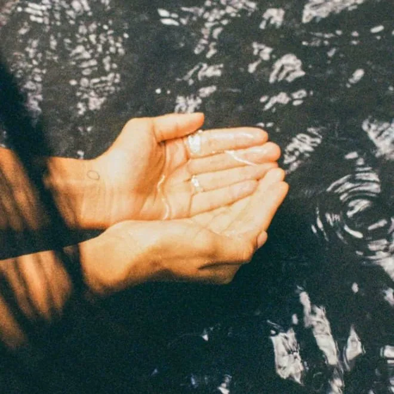

What yoga claims.
What the research shows.
I'm Aditi, a doctoral fellow in the science of yoga. Here, the practices and texts you've heard about are held up against what studies can actually measure.

Hi, I'm Aditi
I'm a doctoral fellow dedicated to the art and science of yoga. Neuroscience of Meditation is where tradition and research meet: the practices taken seriously, and an honest account of what the evidence does and doesn't show.
I'm building a community where teachers and students learn together, and a place for genuine inquiry into yoga research.
Read my storyLatest articles
Each one takes a claim you've probably heard and checks it against the research.
{{ post.title }}
{{ post.description }}
{% endfor %}What we do
Whether you want to practice yoga or learn more about the theory behind it, Neuroscience of Meditation offers a variety of classes that cater to both physical and theoretical aspects of yoga and meditation.
Physical classes
Live and recorded asana sessions, taught with the anatomy alongside the posture.
See classes →Theory classes
The texts, read closely and checked against what current research can and can't support.
See classes →Swar Yoga
The study of the breath's changing sides — and an open record anyone can contribute to.
Try the tool →Go deeper
Classes and reading on the science of yoga, meditation and the breath, for practitioners and teachers who want to understand what they practise.
See courses and books{{ c.title }}
{{ c.blurb }}
{% endif %}{% endfor %} {% for bk in site.data.catalog.books %}{% if bk.home %}{{ bk.title }}
{{ bk.blurb }}
{% endif %}{% endfor %}How articles are checked
Sources you can click
Every study cited links to its PubMed record, and each one is checked against the source before an article is published.
Tradition and evidence, kept apart
What the texts claim and what researchers have measured are described separately, so you can see where they meet and where they don't.
No miracle claims
Practices are shared as education, not treatment. Where the evidence is weak or missing, the article says so plainly.